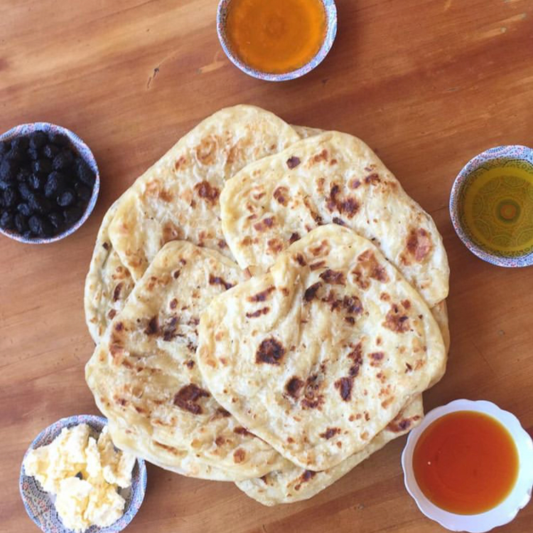

Msamen
Ingredients:
- 3½ cups flour (340 g)
- ½ cup fine semolina (90 g)
- 2 tsp sugar
- 1 teaspoon yeast
- 2 tsp salt
- 1½ cups warm water (approx. ⅓ liter)
- 1½ cups vegetable oil
- ½ cup fine semolina
- ¼ cup very soft unsalted butter
Bread Ingredients:
Ingredients for Folding Bread:
Instructions:
- Mix all the dry ingredients in a large bowl.
- Add 1½ cups of warm water, and mix to form a dough. Add more water if necessary to make a dough that is soft and easy to knead, but not sticky.
- If the dough is too sticky to handle, add a little flour one tablespoon at a time.
- Transfer the dough to a lightly floured work surface and knead by hand for 10 minutes, (or knead the dough in a stand mixer with dough hook for 5 minutes), until the dough is very smooth and elastic.
- Set a bowl of the melted/soft butter and some oil aside. Cover your hands with oil. Begin by dividing the dough into golf ball size balls.
- Continue until all the dough is divided.
- Starting with the first ball you made, add more of the butter mixture to your hands and work surface. Flatten the ball to a very, very thin layer.
- Rub some oil on top, and fold into thirds.
- Add some more oil and sprinkle some semolina on the strip and fold again into thirds.
- You should now have a small square of dough. Continue through the remaining balls.
- Heat up a skillet and add a small amount of oil to the pan. Keep it on a medium heat. Starting with the first “package” that you assembled, oil your hands and begin flattening the dough. It should be thin and remain in a square shape. Do not overwork or the layers meld together.
- Place into the warm skillet and cook until golden brown and slightly crunchy on he outside. If it does not turn to a golden color, you are not using enough oil.